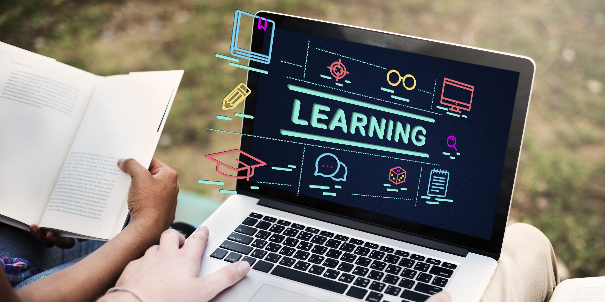
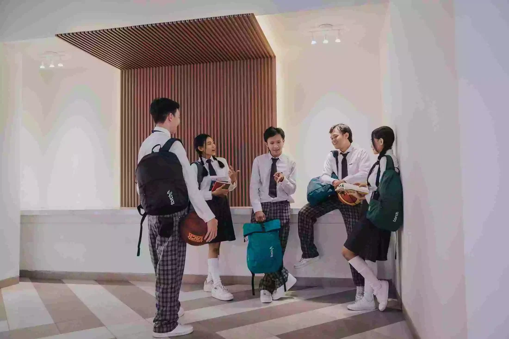

Tips Belajar Efektif dengan Teknologi di Era Digital
Teknologi dapat menjadi alat yang sangat membantu dalam proses belajar. Dengan strategi yang tepat, siswa dapat lebih fokus, produktif, dan memahami materi dengan lebih mudah.
Baca selengkapnyaInformasi seputar dunia pendidikan, tips belajar, pengembangan diri, dan berbagai program yang mendukung masa depan siswa.
Teknologi dapat menjadi alat yang sangat membantu dalam proses belajar. Dengan strategi yang tepat, siswa dapat lebih fokus, produktif, dan memahami materi dengan lebih mudah.
Baca selengkapnya

